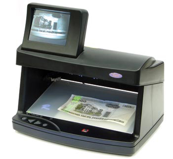
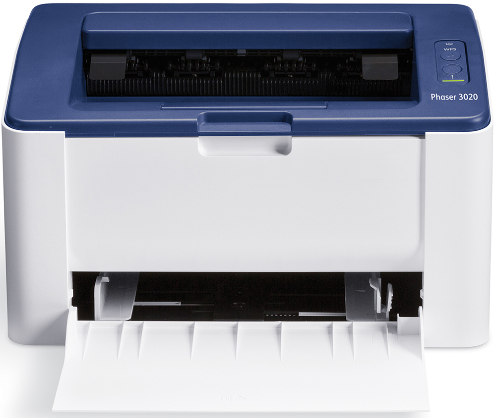
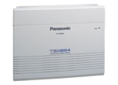
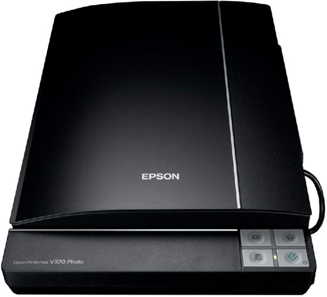
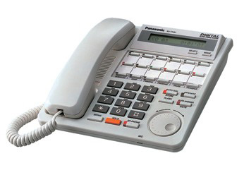
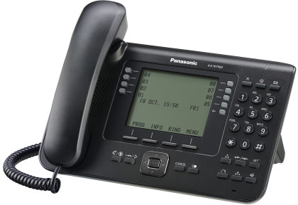
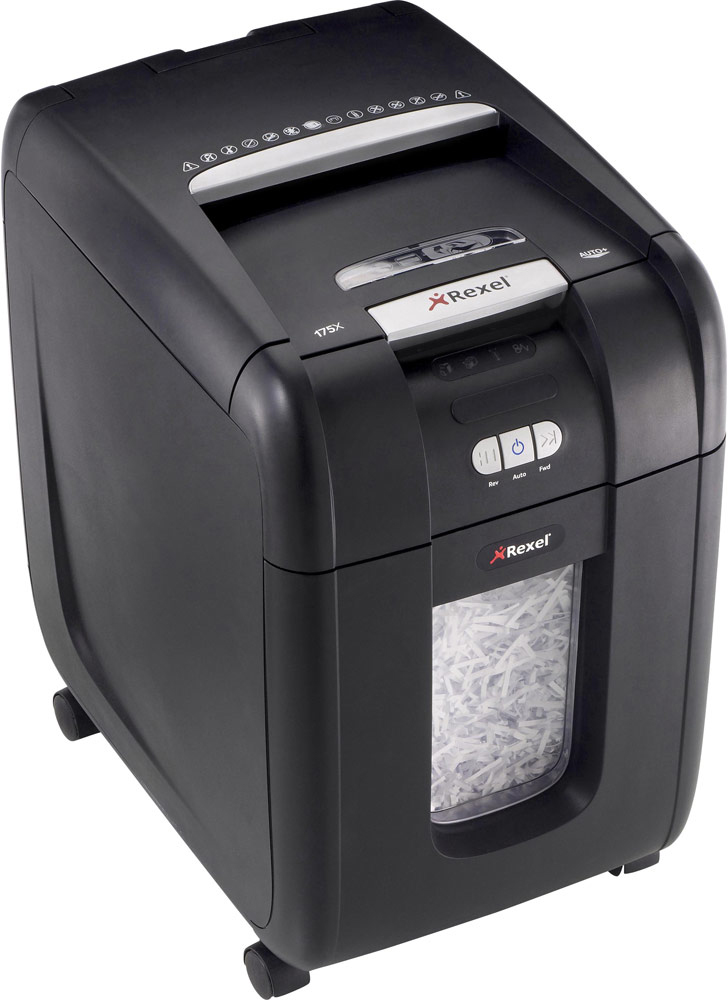
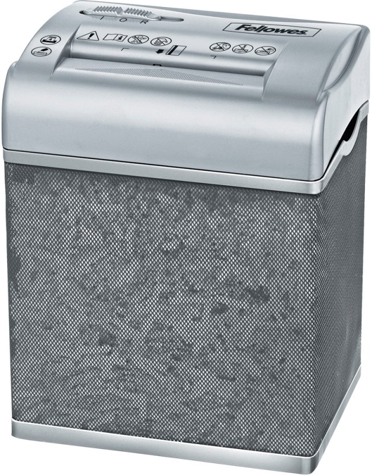
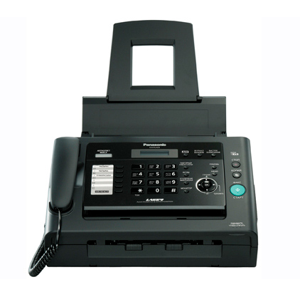

| ✔Наши товары: | ||||
|---|---|---|---|---|
| Фото и имя модели товара | Тип товара | Описание | Рейтинг | Цена |
|  РЕГУЛА 4105 |
Детектор валют | Просмотровый; проверка в ИК-спектре, проверка в видимом спектре, проверка магнитных меток, проверка в УФ-спектре; дисплей; питание: адаптер 12 В. | 700 BYR |
|
 CITIZEN SDC-444S |
Настольный калькулятор | 12-разрядный калькулятор с двойной памятью. Однострочный цифровой дисплей. Функции: квадратный корень числа, процент, смена знака числа, функции запоминания (два регистра памяти). Клавиша MU (расчет маржи). Клавиша "00". Функция округления вычислений. Полозковый переключатель количества знаков после десятичной точки, округления. | 20 BYR |
|
|  Xerox Phaser 3020BI |
Лазерный принтер | A4; монохромная печать; 600x600 dpi; выход первого отпечатка - 8,5 с; скорость печати до 21 стр/мин; интерфейсы - Wifi, USB. | 350 BYR |
|
|  Panasonic KX-TEM824RU |
Мини-АТС | KX-TEM824RU - офисная аналоговая АТС Panasonic До 8 внешних линий До 24 внутренних линий Функция DISA | 1000 BYR |
|
|  Epson Perfection V370 Photo |
Сканер | Планшетный; ПЗС (CCD) датчик; A4; подключение: USB; Оптическое разрешение - 4800x9600 dpi. | 450 BYR |
|
|  Panasonic KX-T7431RU |
Цифровой системный телефон | Цифровой системный телефон (2-проводный). ЖК-дисплей (1 строка) с поддержкой кириллицы, регулируемый по углу наклона. Спикерфон (громкая связь). 12 программируемых кнопок линий/функций с двухцветной индикацией. Диск ускоренного набора номера и программирования JOG-DIAL. Порт дополнительного устройства (XDP). Совместим со цифровыми АТС Panasonic. Поставляется в белом и черном корпусе. | 180 BYR |
|
|  Panasonic KX-NT560RU |
Системный IP-телефон | Совместим с IP-АТС Panasonic серии TDE/NCP, а также с IP-АТС Panasonic серии KX-NS1000(версия ПО 2.00 и выше). 4.4-дюймовый ЖК-дисплей с подсветкой и кириллицей. Встроенный Bluetooth для беспроводных гарнитур. Спикерфон (система громкой связи). Маркировка кнопок линий/функций на экране. 32 программируемые кнопки линий/функций на экране. | 700 BYR |
|
|  Rexel Auto+ 200X |
Шредер | Перекрестная резка; 3 уровень секретности; возможности уничтожения: скобы, пластиковые карты, скрепки; уровень шума 60 дБ; защита от заторов, защита от перегрева. | 1300 BYR |
|
|  Fellowes Shredmate (FS-37005) |
Шредер | Перекрестная резка; 3 уровень секретности; возможности уничтожения: скобы, пластиковые карты; уровень шума 72 дБ; авто старт/стоп, реверс. | 150 BYR |
|
|  Panasonic KX-FL423RU |
Факсимильный аппарат | АОН, Caller ID. Лазерная печать (600 точек на дюйм). Скорость печати: 10 стр/мин. Приeм при отсутствии бумаги (до 100 стр.). Передача из памяти (до 150 стр.). Энергонезависимая память. Передача (33,6 кбит/с). Режим исправления ошибок (ECM). Рассылка (3х20 адресатов). Автоподатчик на 15 листов. Набор 110 номеров. Возможные цвета: черный, белый. | 630 BYR |
|